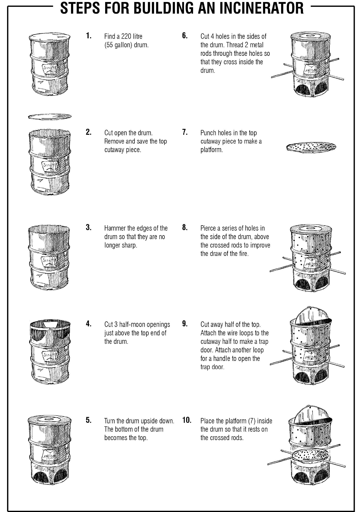

Overview
- In some epidemics, you will need to prevent germs on items (such as bed sheets and clothes that have been contaminated by the patient’s body fluids) from spreading to other people.
- This is especially important when you are dealing with Ebola , Marburg fever , Lassa Fever , plague , and monkeypox .
- An incinerator can burn such items and prevent the disease from spreading to others.
- Do not incinerate items yourself if an alternative is available, such as incineration in health facilities.
- Be very careful when building and using incinerators, because they can be dangerous. Always have to hand something to put the fire out (for example, a bucket of water or sand).
Tips for building an incinerator
- Keep a bucket of water or sand by you in case you need to put the fire out.
- If you have never built an incinerator before, ask a professional or someone who has already built one to help or advise you.
- Wear protective clothing, in particular gloves, when handling contaminated clothing or other items belonging to a deceased person. Place items carefully in the incinerator and leave them to burn until they have turned to ash, destroying all the germs.
- Tell people in the community what you are doing so that they know to stay away and keep safe.
